问题二图表面板
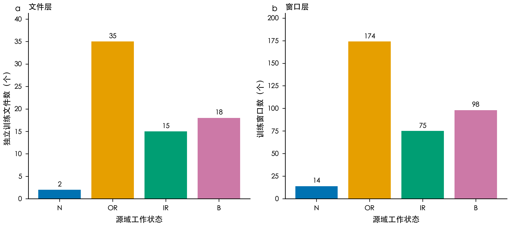
raw_q2_class_imbalance：左图按原文件计数，右图按窗口计数；窗口不能作为独立样本量。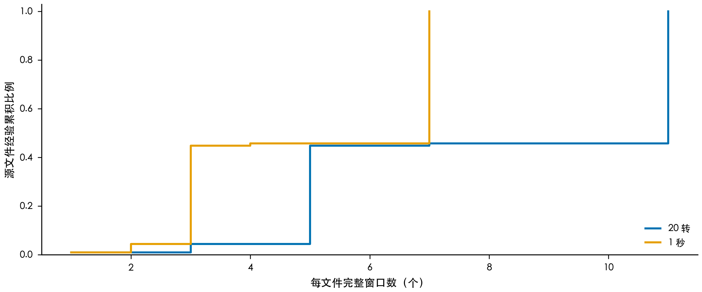
raw_q2_windows_per_file：经验累积分布按文件计算；1 秒表示的窗口数整体更少。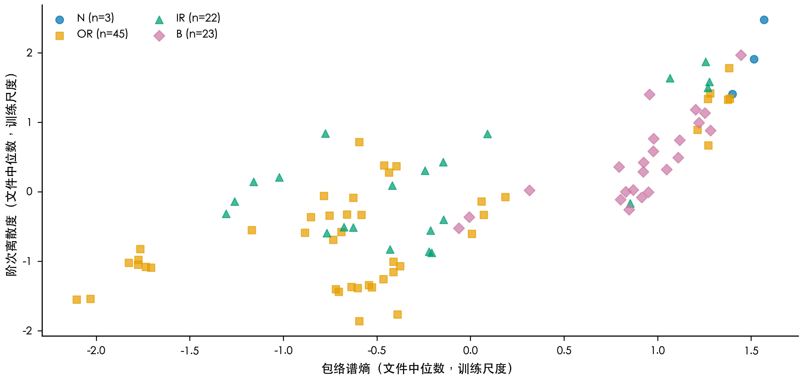
raw_q2_feature_space：每点为一个开发文件；正常类只有3点，图中不绘制分布估计。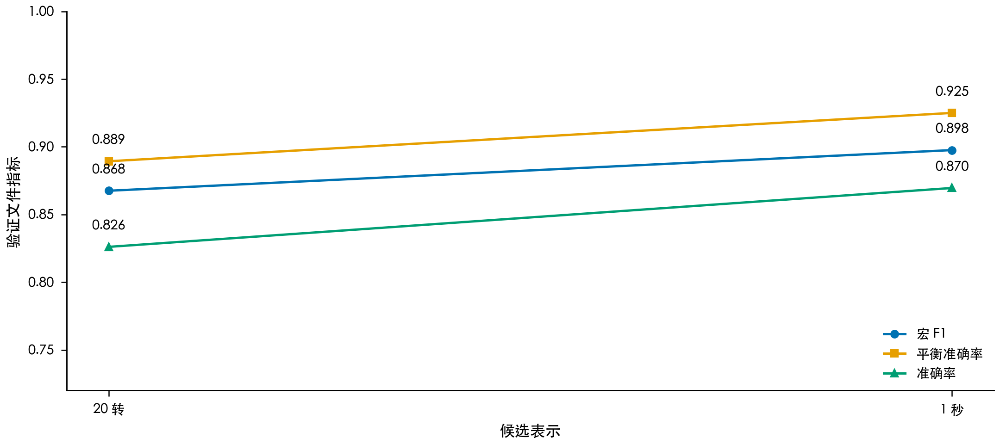
process_q2_representation_selection：两条路线均由70个训练文件拟合；表示按宏F1、平衡准确率和正常召回依次选择。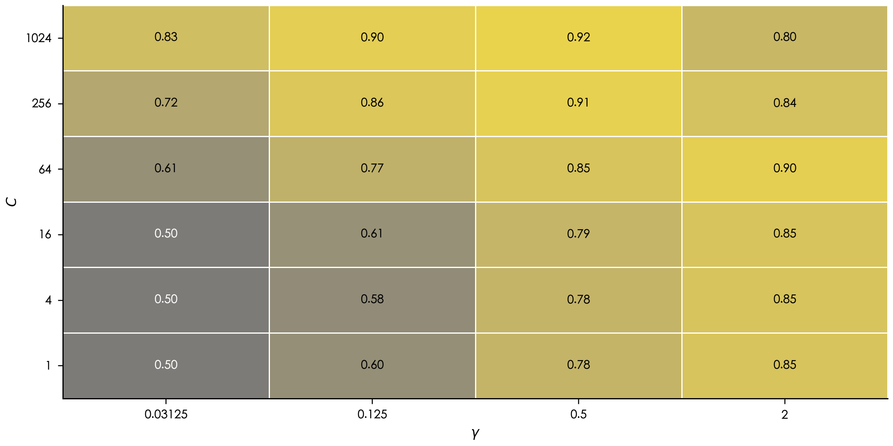
process_q2_parameter_surface：每格为两折文件级宏F1平均；网格在运行前固定。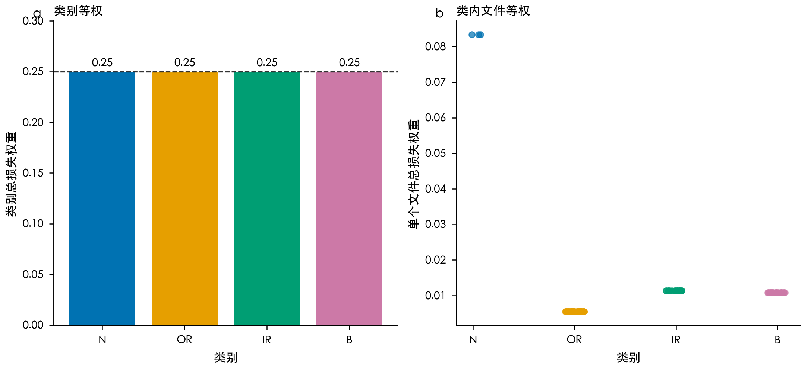
process_q2_weight_audit：左图每类总权重严格为0.25；右图同类文件总权重相同。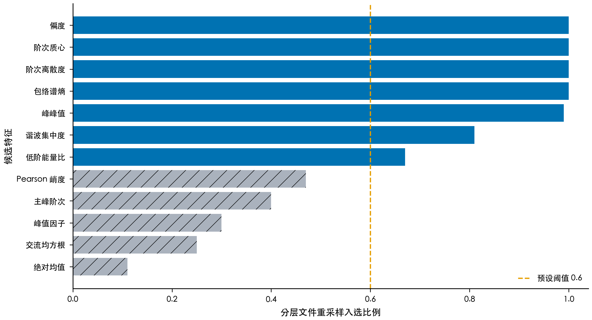
process_q2_feature_selection：蓝色为最终保留，灰色斜纹为未保留；稳定比例不是概率。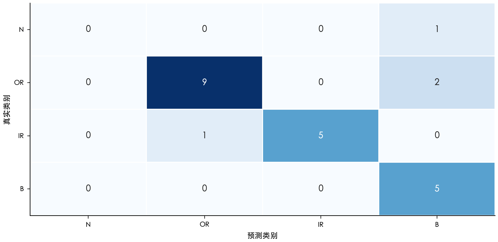
result_q2_confusion：行为真实类别、列为预测类别；正常文件被判为B，OR另有2个判为B，IR有1个判为OR。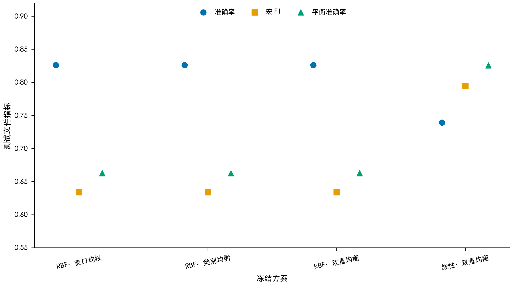
result_q2_ablation：四个方案均在93个开发文件内独立调参；测试不参与选择。三种RBF方案的文件预测相同。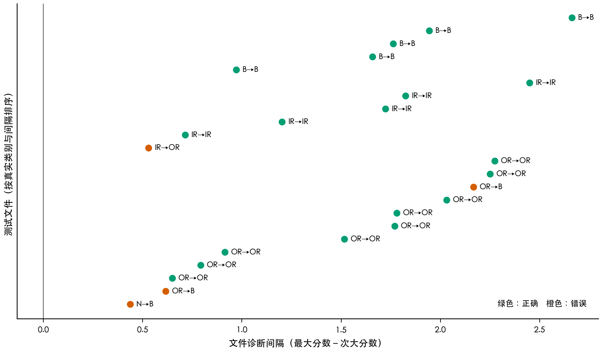
result_q2_file_margins：间隔是原生SVM分数差，不是正确概率；标签显示真实类别→预测类别。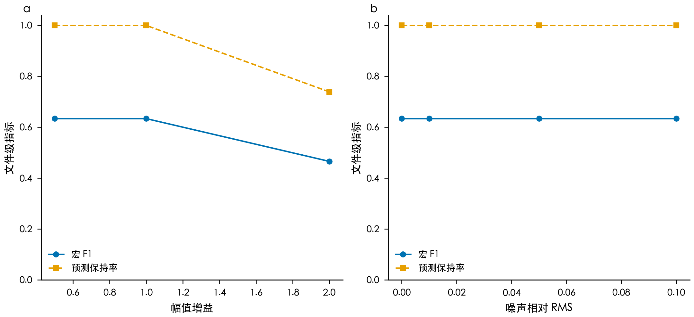
result_q2_robustness：噪声回到原始信号重算；增益按问题一齐次关系重算特征。预测保持率相对未扰动主模型。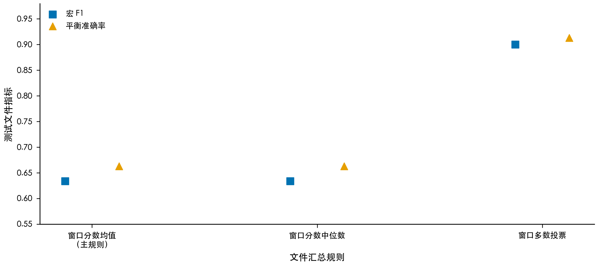
result_q2_aggregation：主报告保持预注册的窗口分数均值；看过测试结果后不改成多数投票。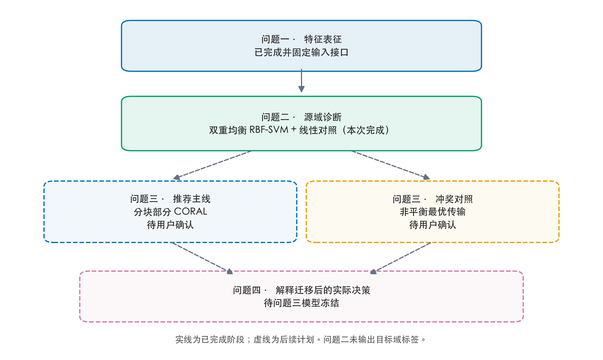
flow_overall_model：问题二只冻结源域分类器；问题三、四仍等待用户确认。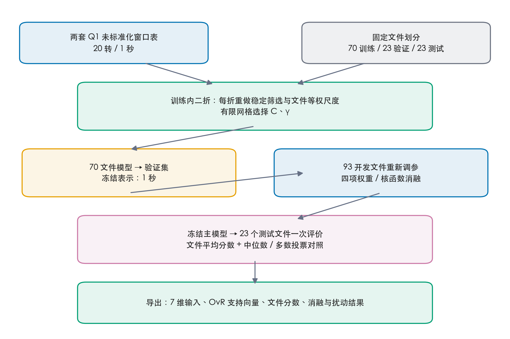
flow_q2_model：Q1 频带固定；Q2 每个拟合折重做特征筛选和尺度。测试结果不回流。